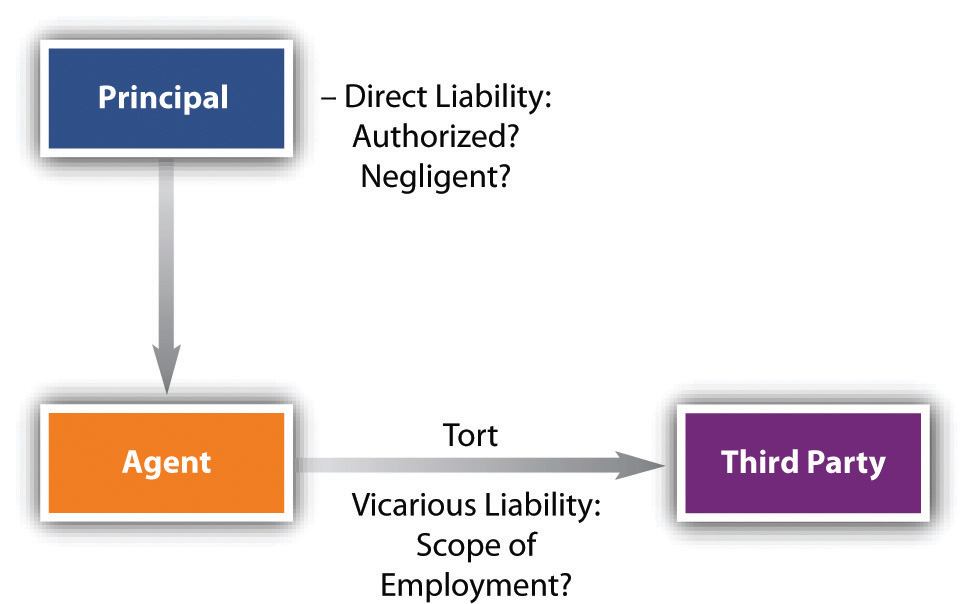

When is the principal liable for injuries that the agent causes another to suffer?
There is a distinction between torts prompted by the principal himself and torts of which the principal was innocent. If the principal directed the agent to commit a tort or knew that the consequences of the agent’s carrying out his instructions would bring harm to someone, the principal is liable. This is an application of the general common-law principle that one cannot escape liability by delegating an unlawful act to another. The syndicate that hires a hitman is as culpable of murder as the man who pulls the trigger. Similarly, a principal who is negligent in his use of agents will be held liable for their negligence. This rule comes into play when the principal fails to supervise employees adequately, gives faulty directions, or hires incompetent or unsuitable people for a particular job. Imposing liability on the principal in these cases is readily justifiable since it is the principal’s own conduct that is the underlying fault; the principal here is directly liable.
But the principle of liability for one’s agent is much broader, extending to acts of which the principal had no knowledge, that he had no intention to commit nor involvement in, and that he may in fact have expressly prohibited the agent from engaging in. This is the principle of respondeat superiorThe Latin term for the master-servant doctrine. (“let the master answer”) or the master-servant doctrineA doctrine under which the employer is liable for torts committed by the employee in the scope of employment., which imposes on the principal vicarious liabilityLiability incurred indirectly through the actions of another. (vicarious means “indirectly, as, by, or through a substitute”) under which the principal is responsible for acts committed by the agent within the scope of the employment (see Figure 21.2 "Principal’s Tort Liability").
Figure 21.2 Principal’s Tort Liability
The modern basis for vicarious liability is sometimes termed the “deep pocket” theory: the principal (usually a corporation) has deeper pockets than the agent, meaning that it has the wherewithal to pay for the injuries traceable one way or another to events it set in motion. A million-dollar industrial accident is within the means of a company or its insurer; it is usually not within the means of the agent—employee—who caused it.
The “deep pocket” of the defendant-company is not always very deep, however. For many small businesses, in fact, the principle of respondeat superior is one of life or death. One example was the closing in San Francisco of the much-beloved Larraburu Brothers Bakery—at the time, the world’s second largest sourdough bread maker. The bakery was held liable for $2 million in damages after one of its delivery trucks injured a six-year-old boy. The bakery’s insurance policy had a limit of $1.25 million, and the bakery could not absorb the excess. The Larraburus had no choice but to cease operations. (See http://www.outsidelands.org/larraburu.php.)
Respondeat superior raises three difficult questions: (1) What type of agents can create tort liability for the principal? (2) Is the principal liable for the agent’s intentional torts? (3) Was the agent acting within the scope of his employment? We will consider these questions in turn.
In general, the broadest liability is imposed on the master in the case of tortious physical conduct by a servant, as discussed in Chapter 20 "Relationships between Principal and Agent". If the servant acted within the scope of his employment—that is, if the servant’s wrongful conduct occurred while performing his job—the master will be liable to the victim for damages unless, as we have seen, the victim was another employee, in which event the workers’ compensation system will be invoked. Vicarious tort liability is primarily a function of the employment relationship and not agency status.
Ordinarily, an individual or a company is not vicariously liable for the tortious acts of independent contractors. The plumber who rushes to a client’s house to repair a leak and causes a traffic accident does not subject the homeowner to liability. But there are exceptions to the rule. Generally, these exceptions fall into a category of duties that the law deems nondelegable. In some situations, one person is obligated to provide protection to or care for another. The failure to do so results in liability whether or not the harm befell the other because of an independent contractor’s wrongdoing. Thus a homeowner has a duty to ensure that physical conditions in and around the home are not unreasonably dangerous. If the owner hires an independent contracting firm to dig a sewer line and the contractor negligently fails to guard passersby against the danger of falling into an open trench, the homeowner is liable because the duty of care in this instance cannot be delegated. (The contractor is, of course, liable to the homeowner for any damages paid to an injured passerby.)
In the nineteenth century, a principal was rarely held liable for intentional wrongdoing by the agent if the principal did not command the act complained of. The thought was that one could never infer authority to commit a willfully wrongful act. Today, liability for intentional torts is imputed to the principal if the agent is acting to further the principal’s business. See the very disturbing Lyon v. Carey in Section 21.4.2 "Employer’s Liability for Employee’s Intentional Torts: Scope of Employment".
The general rule is that a principal is liable for torts only if the servant committed them “in the scope of employment.” But determining what this means is not easy.
It may be clear that the person causing an injury is the agent of another. But a principal cannot be responsible for every act of an agent. If an employee is following the letter of his instructions, it will be easy to determine liability. But suppose an agent deviates in some way from his job. The classic test of liability was set forth in an 1833 English case, Joel v. Morrison.Joel v. Morrison, 6 Carrington & Payne 501. The plaintiff was run over on a highway by a speeding cart and horse. The driver was the employee of another, and inside was a fellow employee. There was no question that the driver had acted carelessly, but what he and his fellow employee were doing on the road where the plaintiff was injured was disputed. For weeks before and after the accident, the cart had never been driven in the vicinity in which the plaintiff was walking, nor did it have any business there. The suggestion was that the employees might have gone out of their way for their own purposes. As the great English jurist Baron Parke put it, “If the servants, being on their master’s business, took a detour to call upon a friend, the master will be responsible.…But if he was going on a frolic of his own, without being at all on his master’s business, the master will not be liable.” In applying this test, the court held the employer liable.
The test is thus one of degree, and it is not always easy to decide when a detour has become so great as to be transformed into a frolic. For a time, a rather mechanical rule was invoked to aid in making the decision. The courts looked to the servant’s purposes in “detouring.” If the servant’s mind was fixed on accomplishing his own purposes, then the detour was held to be outside the scope of employment; hence the tort was not imputed to the master. But if the servant also intended to accomplish his master’s purposes during his departure from the letter of his assignment, or if he committed the wrong while returning to his master’s task after the completion of his frolic, then the tort was held to be within the scope of employment.
This test is not always easy to apply. If a hungry deliveryman stops at a restaurant outside the normal lunch hour, intending to continue to his next delivery after eating, he is within the scope of employment. But suppose he decides to take the truck home that evening, in violation of rules, in order to get an early start the next morning. Suppose he decides to stop by the beach, which is far away from his route. Does it make a difference if the employer knows that his deliverymen do this?
Court decisions in the last forty years have moved toward a different standard, one that looks to the foreseeability of the agent’s conduct. By this standard, an employer may be held liable for his employee’s conduct even when devoted entirely to the employee’s own purposes, as long as it was foreseeable that the agent might act as he did. This is the “zone of risk” test. The employer will be within the zone of risk for vicarious liability if the employee is where she is supposed to be, doing—more or less—what she is supposed to be doing, and the incident arose from the employee’s pursuit of the employer’s interest (again, more or less). That is, the employer is within the zone of risk if the servant is in the place within which, if the master were to send out a search party to find a missing employee, it would be reasonable to look. See Section 4, Cockrell v. Pearl River Valley Water Supply Dist.
Vicarious liability is not limited to harm caused in the course of an agency relationship. It may also be imposed in other areas, including torts of family members, and other torts governed by statute or regulation. We will examine each in turn.
A problem commonly arises when an automobile owner lends his vehicle to a personal friend, someone who is not an agent, and the borrower injures a third person. Is the owner liable? In many states, the owner is not liable; in other states, however, two approaches impose liability on the owner.
The first approach is legislative: owner’s consent statutesDoctrine under which the owner of an automobile is liable for damages caused by the driver who has permission to use the car. make the owner liable when the automobile is being driven with his consent or knowledge. The second approach to placing liability on the owner is judicial and known as the family purpose doctrineA doctrine under which an owner of an automobile is liable for damages to others incurred while members of his family are driving the vehicle, under the theory that the vehicle is owned for family purposes.. Under this doctrine, a family member who negligently injures someone with the car subjects the owner to liability if the family member was furthering family purposes. These are loosely defined to include virtually every use to which a child, for example, might put a car. In a Georgia case, Dixon v. Phillips, the father allowed his minor son to drive the car but expressly forbade him from letting anyone else do so.Dixon v. Phillips, 217 S.E.2d 331 (Ga. 1975). Nevertheless, the son gave the wheel to a friend and a collision occurred while both were in the car. The court held the father liable because he made the car available for the pleasure and convenience of his son and other family members.
At common law, the husband was liable for the torts of his wife, not because she was considered an agent but because she was considered to be an extension of him. “Husband and wife were only one person in law,”O.W. Holmes, Agency, 4 Harvard Law Rev. 353 (1890–91). says Holmes, and any act of the wife was supposed to have been done at the husband’s direction (to which Mr. Dickens’s Mr. Bumble responded, in the memorable line, “If the law supposes that, the law is a ass—a idiot”Charles Dickens, Oliver Twist, (London: 1838), chap 51.). This ancient view has been abrogated by statute or by court ruling in all the states, so that now a wife is solely responsible for her own torts unless she in fact serves as her husband’s agent.
Unlike wives, children are not presumed at common law to be agents or extensions of the father so that normally parents are not vicariously liable for their children’s torts. However, they can be held liable for failing to control children known to be dangerous.
Most states have statutorily changed the common-law rule, making parents responsible for willful or malicious tortious acts of their children whether or not they are known to be mischief-makers. Thus the Illinois Parental Responsibility Law provides the following: “The parent or legal guardian of an unemancipated minor who resides with such parent or legal guardian is liable for actual damages for the willful or malicious acts of such minor which cause injury to a person or property.”Ill. Rev. Stat. (2005), chapter 70, paragraph 51. http://law.justia.com/illinois/codes/2005/chapter57/2045.html. Several other states impose a monetary limit on such liability.
There are certain types of conduct that statutes or regulation attempt to control by placing the burden of liability on those presumably in a position to prevent the unwanted conduct. An example is the “Dramshop Act,” which in many states subjects the owner of a bar to liability if the bar continues to serve an intoxicated patron who later is involved in an accident while intoxicated. Another example involves the sale of adulterated or short-weight foodstuffs: the employer of one who sells such may be liable, even if the employer did not know of the sales.
As a general proposition, a principal will not be held liable for an agent’s unauthorized criminal acts if the crimes are those requiring specific intent. Thus a department store proprietor who tells his chief buyer to get the “best deal possible” on next fall’s fashions is not liable if the buyer steals clothes from the manufacturer. A principal will, however, be liable if the principal directed, approved, or participated in the crime. Cases here involve, for example, a corporate principal’s liability for agents’ activity in antitrust violations—price-fixing is one such violation.
There is a narrow exception to the broad policy of immunity. Courts have ruled that under certain regulatory statutes and regulations, an agent’s criminality may be imputed to the principal, just as civil liability is imputed under Dramshop Acts. These include pure food and drug acts, speeding ordinances, building regulations, child labor rules, and minimum wage and maximum hour legislation. Misdemeanor criminal liability may be imposed upon corporations and individual employees for the sale or shipment of adulterated food in interstate commerce, notwithstanding the fact that the defendant may have had no actual knowledge that the food was adulterated at the time the sale or shipment was made.
The principal will be liable for the employee’s torts in two circumstances: first, if the principal was directly responsible, as in hiring a person the principal knew or should have known was incompetent or dangerous; second, if the employee committed the tort in the scope of business for the principal. This is the master-servant doctrine or respondeat superior. It imposes vicarious liability on the employer: the master (employer) will be liable if the employee was in the zone of activity creating a risk for the employer (“zone of risk” test), that is—generally—if the employee was where he was supposed to be, when he was supposed to be there, and the incident arose out of the employee’s interest (however perverted) in promoting the employer’s business.
Special cases of vicarious liability arise in several circumstances. For example, the owner of an automobile may be liable for torts committed by one who borrows it, or if it is—even if indirectly—used for family purposes. Parents are, by statute in many states, liable for their children’s torts. Similarly by statute, the sellers and employers of sellers of alcohol or adulterated or short-weight foodstuffs may be liable. The employer of one who commits a crime is not usually liable unless the employer put the employee up to the crime or knew that a crime was being committed. But some prophylactic statutes impose liability on the employer for the employee’s crime—even if the employee had no intention to commit it—as a means to force the employer to prevent such actions.